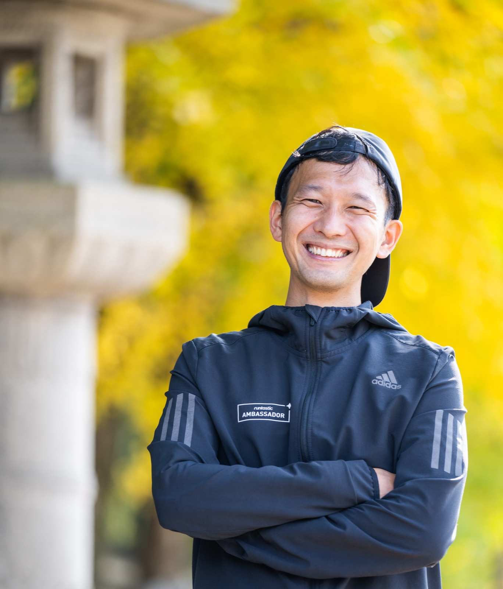

PROFILE
GPSランナー ── 走って地図に絵を描く、世界初の職業。

Naoki Shimizu / GPS RUNNER
兵庫県西宮市出身。建設コンサルタントと小学校教師を経て、 2019年4月より世界初の職業「GPSランナー」を創り、プロとして活動を開始。
「"競わない"ランニング文化を創ること」をミッションに掲げ、 「RUN FOR SMILE」をモットーに国内外を駆け巡る。 世界12ヵ国を走り、描いた作品数は約1,600、総距離はおよそ19,000km。(2026年3月現在)
アジア競技大会2026（アジアオリンピック）の公式イベント 「GPS RUN ART」のコーディネーターを務める。 「世界の果てまでイッテQ！」「Yahoo! news」「MARCA」など、 世界12ヵ国の160以上のメディアに出演・掲載。
MOVIE
CAREER
兵庫県西宮市に生まれる
イギリスの超田舎町「ケニルワース」で幼少期を過ごす
神奈川県川崎市立 木月小学校 卒業
神奈川県川崎市立 住吉中学校 卒業
岐阜県麗澤瑞浪高等学校 卒業
甲南大学歴史文化学科 卒業
途中、イギリスのリーズ大学に半年間留学
建設コンサルタント会社に勤務
西宮市の小学校で支援員 + クーバーコーチングサッカースクール
佛教大学教育学科 卒業（通信制）
西宮市で6年間 小学校教諭
初GPSラン「西宮LOVE」
バレンタインデーに西宮の街に「LOVE」を描く。すべてはここから始まった。
GPSランナーとして活動開始
adidas Runtastic Japan Ambassador就任。全世界1.6億ユーザーの公式アプリのワールドアンバサダー（全世界24名）に日本人初任命。
ヨーロッパ中心に世界9ヵ国でGPSラン
オーストリアでadidasグループ社員200名にプレゼンテーション。
西宮つーしんの"走る記者"として活動を開始
Asian Games 2026「GPS RUN ART」コーディネーター就任
「世界の果てまでイッテQ！」出演。いとうあさこさんと一緒に走り、出川哲郎さんの似顔絵を制作。
西宮若者応援BANK 代表就任
TBS「冒険少年」出演。GPSアートで47都道府県走破。西宮市長選「GO to VOTE」企画で投票率48年ぶり40%超え。
台湾24日連続フルマラソン ── 台湾1周1,135km完走
「阿部寛と渡辺直美の次に有名な日本人」と称される。
ペルーで4,600km「アルパカの地上絵」制作
EFE通信をはじめ7ヵ国でニュースに。「痛快！明石家電視台」ゲスト出演、さんまさんと夢の共演。
つながれJAPAN！── 3,700kmを113日間で完走
21都道府県を駆け抜け、大震災を受けた能登復興のGPSアート「ランナー」を描く。
ELEVEN RUN 2026 プロジェクト
片道切符で渡米。アメリカ、カナダ、メキシコ、コロンビア、エクアドル、ペルー、ボリビア、チリ、アルゼンチン、ウルグアイ、ブラジルの11ヶ国を駆け抜ける。
講演・イベント・メディア出演・コラボレーションなど、お気軽にご連絡ください。